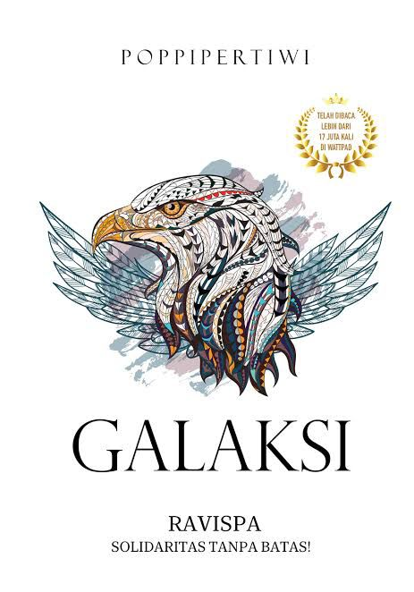
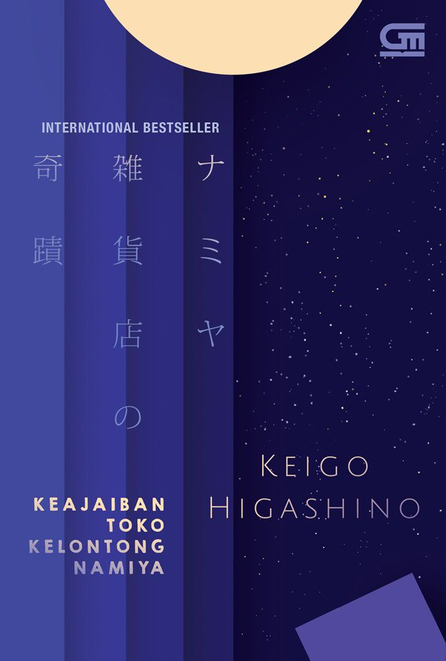
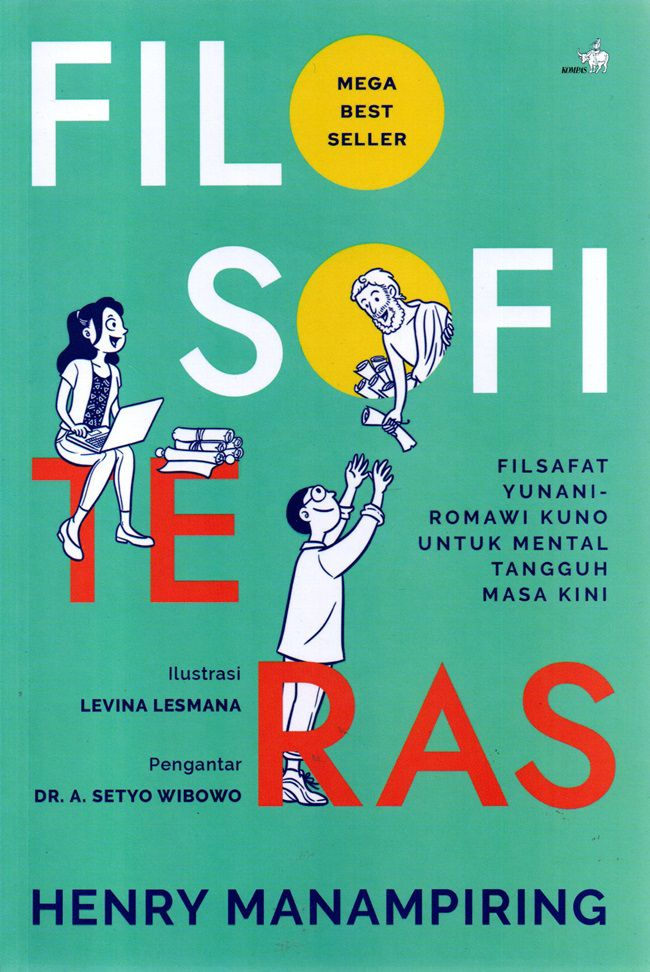
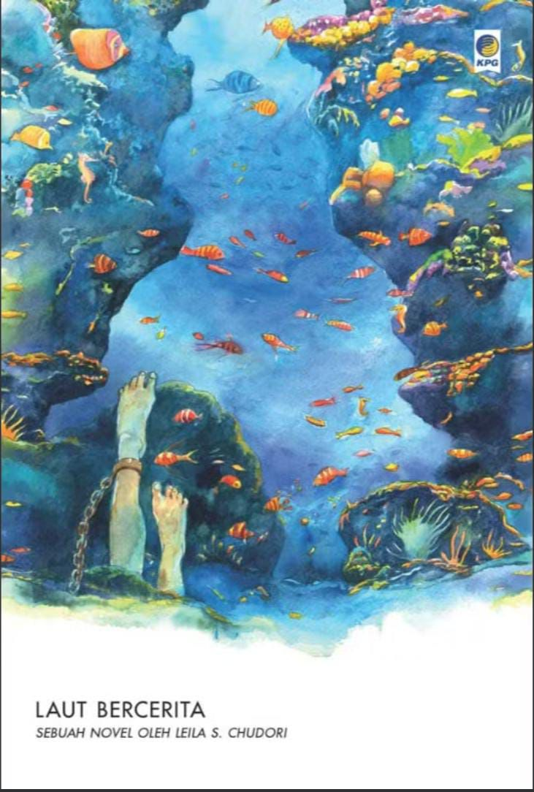
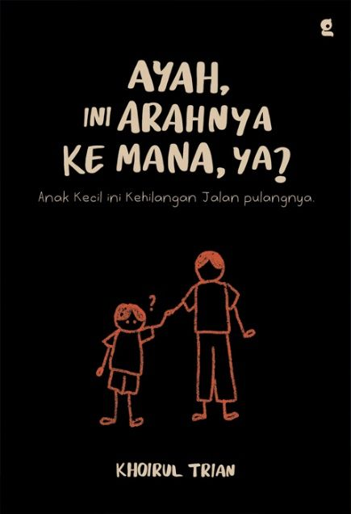

| Gambar | Informasi Buku | Kutipan |
|
 |
Judul: Galaksi Penulis: Poppi Pertiwi Penerbit: Coconut Books Tahun: 2017 |
"Jangan menilai seseorang hanya dari apa yang kamu lihat." |
|
 |
Judul: Keajaiban Toko Kelentong Namiya Penulis: Keigo Higashino Penerbit: Gramedia Pustaka Utama Tahun: 2012 |
"Setiap masalah pasti memiliki jalan keluar, selama kita mau Mendengarkan." |
 |
Judul: Fisolofi Teras Penulis: Henry Manampiring Penerbit: kompas Tahun: 2018 |
"Kita tidak bisa mengontrol semua hal, tetapi kita bisa mengontrol respon kita." |
|
 |
Judul: Laut Bercerita Penulis: Leila S. Chudori Penerbit: Kepustakaan Populer Gramedia Tahun: 2017 |
"kebenaran tidak akan pernah benar-benar hilang." |
 |
Judul: Ayah ini Arahnya ke mana,ya? Penulis: Khoirul Trian Penerbit: Gradien Mediatama Tahun: 2024 |
"Ayah, hari ini aku kesepian dan gak tau harus lari kemana lagi." |